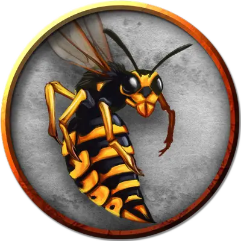

Пробуждённая гигантская оса
Awakened Giant Wasp
Средний Зверь, без мировоззрения

Класс Доспеха 12
Хиты 13 (3к8)
Скорость 10 футов, летая 50 футов
| мод | спас | ||
|---|---|---|---|
| СИЛ | 10 | +0 | +0 |
| ЛОВ | 14 | +2 | +2 |
| ТЕЛ | 10 | +0 | +0 |
| мод | спас | ||
|---|---|---|---|
| ИНТ | 10 | +0 | +0 |
| МДР | 10 | +0 | +0 |
| ХАР | 3 | −4 | −4 |
Чувства пассивное Восприятие 10
Опасность 1/2 (100 опыта)
Бонус мастерства +2
Действия
Жало. Рукопашная атака оружием: +4 к попаданию, досягаемость 5 футов, одно существо. Попадание: Колющий урон 5 (1к6 + 2), и цель должна совершить спасбросок Телосложения Сл 11, получая урон ядом 10 (3к6) при провале, или половину этого урона при успехе. Если урон ядом уменьшает хиты цели до 0, цель остается стабилизированной, но отравленной на 1 час, даже если позже восстановит хиты, и она парализована, пока отравлена таким образом.